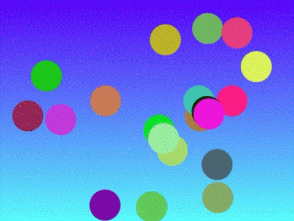

Le programme suivant demande à l'utilisateur 3 valeurs, construit un tableau avec ces entrées, calcule leur somme puis affiche le résultat dans la console.
_fill {
LET i = 0;
WHILE i < 3 DO
INPUT(arr(i));
i = i + 1;
WEND;
}
_resultat {
PRINT("arr = {" : arr(0) : ", " : arr(1) : ", " : arr(2) : "}");
PRINT("Somme = " : res);
}
main {
DIM arr(3);
GOSUB _fill;
LET i = 0;
LET res = 0;
WHILE i < 3 DO
res = res + arr(i);
i = i + 1;
WEND;
GOSUB _resultat;
}
(1) Boite de dialogue
(2) Console
(3) Interface Graphique
Le Juste Prix est un petit jeu dans lequel vous devez deviner un nombre choisit aléatoirement entre 0 et 100 (inclus).
Vous entrez un nombre dans la boîte de dialogue (1) puis un message apparaît dans la console pour vous indiquer si le nombre
à deviner est "Plus petit" ou "Plus grand" que celui indiqué (2).
Si vous devinez correctement, vous verrez un message de victoire apparaître dans l'interface graphique (3) et dans la console.
_prompt {
DO
PRINT("Entrez un nombre entre 1 et 100.");
INPUT(guess);
WHILE guess < 0;
}
_success {
// message console
PRINT("Bravo !");
// dessin étoile interface graphique
DRAWSQUARE(SCREEN_W/2-75, SCREEN_H/2-75, 150, 45, "yellow", 1);
DRAWSQUARE(SCREEN_W/2-75, SCREEN_H/2-75, 150, 0, "yellow", 1);
// message interface graphique
DRAWTEXT("BRAVO !", 100, SCREEN_H/2+30, "80px Arial", "coral", 1);
}
main {
LET guess = -1;
LET goal = RND(101);
LET end = 0;
}
update {
WHILE guess <> goal DO
GOSUB _prompt;
IF guess < goal THEN PRINT("Plus grand!"); ENDIF;
IF guess > goal THEN PRINT("Plus petit!"); ENDIF;
WEND;
IF end <> 1 THEN GOSUB _success;
ENDIF;
end = 1;
}
Affiche composée de formes et de texte sur un mur de brique
main {
// dessine les briques du mur
LET BH = 20;
LET BW = 50;
LET SPACE = 5;
LET ROWS = INT(360/(BH+SPACE))+1;
LET COLS = INT(480/(BW+SPACE))+2;
FOR R = 0 TO ROWS
FOR C = 0 TO COLS
IF R%2 THEN
IF C = 0 THEN
DRAWRECT(C*(BW+SPACE), R*(BH+SPACE), BW/2, BH, 0, "DarkGoldenRod", true);
ELSE
DRAWRECT(C*(BW+SPACE)-BW/2, R*(BH+SPACE), BW, BH, 0, "DarkGoldenRod", true);
ENDIF;
ELSE
DRAWRECT(C*(BW+SPACE), R*(BH+SPACE), BW, BH, 0, "DarkGoldenRod", true);
ENDIF;
FEND;
FEND;
// efface un rectangle blanc correspondant à l'affiche
DRAWCLEARAREA(120,120,240,130);
// dessine les formes et le texte de l'affiche
DRAWLINE(125, 125, 355, 125,"Cyan");
DRAWRECT(135, 140, 50, 70, 5, "Red", true);
DRAWSQUARE(135, 215, 20, -10, "Blue", true);
DRAWCIRCLE(250, 185, 50, 10, "Green", true);
DRAWTRIANGLE(330, 205, 50, 15, "Pink", true);
DRAWTEXT("Hello", 185, 200, "48px serif", "black", 1);
DRAWLINE(125, 245, 355, 245, "Gray");
}
Dix balles oscillant de manière sinusoïdale sur fond coloré
_pickcolor {
a = rnd(4);
if a = 0 then col = "pink"; ball = "cyan";
endif;
if a = 1 then col = "cyan"; ball = "coral";
endif;
if a = 2 then col = "lightblue"; ball = "yellow";
endif;
if a = 3 then col = "orange"; ball = "lightgreen";
endif;
}
main {
phase = 0;
timer = 0;
col = "";
ball = "";
gosub _pickcolor;
}
update {
drawrect(0, 0, SCREEN_W, SCREEN_H, 0, col, 1);
for i = 0 to 10
angle = phase + i * 36;
y = SCREEN_H/2 + 80 * sin(dtr(angle));
drawcircle(i * 48 + 24, y, 20, 0, ball, 1);
fend;
phase = (phase + 8) % 360;
timer = timer + 1;
if timer = 30 then
timer = 0;
gosub _pickcolor;
endif;
}

Balles rebondissant aléatoirement sur fond coloré
_drawbg {
r = 128 * cos(dtr(bgcolphi)) + 128;
b = 128 * sin(dtr(bgcolphi)) + 128;
for j = 0 to SCREEN_H
bgcol = rgb(r, j * (255 / SCREEN_H), b);
drawrect(0, j, SCREEN_W, j + 1, 0, bgcol, 1);
fend;
bgcolphi = (bgcolphi + 3) % 360;
}
main {
ballnb = 20;
dim ballx(20);
dim bally(20);
dim balldir(20);
dim ballcol(20, 3);
for i = 0 to 20
ballx(i) = SCREEN_W / 2;
bally(i) = SCREEN_H / 2;
balldir(i) = rnd(360);
ballcol(i, 0) = rnd(255);
ballcol(i, 1) = rnd(255);
ballcol(i, 2) = rnd(255);
fend;
dir = 0;
x = 0;
y = 0;
size = 50;
radius = size / 2;
speed = 5;
fgcol = "black";
tmp = "";
bgcolphi = 0;
}
update {
gosub _drawbg;
for i = 0 to 20
dir = balldir(i);
x = ballx(i);
y = bally(i);
x = x + speed * cos(dtr(dir));
y = y - speed * sin(dtr(dir));
if x - radius < 0 then
x = radius;
if dir < 180 then dir = rnd(70) + 10;
else dir = rnd(70) + 280;
endif;
elif x + radius > SCREEN_W then
x = SCREEN_W - radius;
if dir < 180 then dir = rnd(70) + 100;
else dir = rnd(70) + 190;
endif;
endif;
if y - radius < 0 then
y = radius;
if dir < 90 then dir = rnd(70) + 280;
else dir = rnd(70) + 190;
endif;
elif y + radius > SCREEN_H then
y = SCREEN_H - radius;
if dir < 270 then dir = rnd(70) + 100;
else dir = rnd(70) + 10;
endif;
endif;
dir = dir % 360;
fgcol = rgb(ballcol(i, 0), ballcol(i, 1), ballcol(i, 2));
drawcircle(x, y, radius, 0, fgcol, 1);
ballx(i) = x;
bally(i) = y;
balldir(i) = dir;
fend;
}
Extrait d'une partie de Pong
Pong est inspiré du tennis de table en vue de dessus, vous affrontez une IA en déplaçant la raquette
virtuelle de haut en bas, via les touches directionnelles, de façon à garder la balle dans le terrain de jeu.
Des bruitages accompagnent la frappe de la balle sur les raquettes.
_start {
ball_dir = rnd(360);
}
_moveBall {
ball_dir = ball_dir % 360;
if ball_dir < 0 then ball_dir = ball_dir + 360;
endif;
ball_x = ball_x + ball_spd * cos(dtr(ball_dir));
ball_y = ball_y - ball_spd * sin(dtr(ball_dir));
if ball_y - ball_rad < 0 then
ball_y = ball_rad;
if ball_dir < 90 then ball_dir = rnd(60) + 280;
else ball_dir = rnd(60) + 190;
endif;
elif ball_y + ball_rad > SCREEN_H then
ball_y = SCREEN_H - ball_rad;
if ball_dir < 270 then ball_dir = rnd(60) + 100;
else ball_dir = rnd(60) + 10;
endif;
endif;
if ball_x < 0 or ball_x > SCREEN_W then
play("okay.mp3", 50, "file");
gosub _reset;
endif;
}
_movePaddleLeft {
if up then left_y = left_y - paddle_spd;
elif down then left_y = left_y + paddle_spd;
endif;
if left_y < 0 then left_y = 0;
elif left_y + paddle_h > SCREEN_H then left_y = SCREEN_H - paddle_h;
endif;
}
_movePaddleRight {
if ball_y < (right_y + paddle_h / 2) - paddle_spd then right_y = right_y - paddle_spd;
elif ball_y > right_y + paddle_h / 2 + paddle_spd then right_y = right_y + paddle_spd;
endif;
if right_y < 0 then right_y = 0;
elif right_y + paddle_h > SCREEN_H then right_y = SCREEN_H - paddle_h;
endif;
}
_checkPressedKeys {
if keypressed("ArrowUp") then up = 1;
elif keyPressed("ArrowDown") then down = 1;
endif;
if keyreleased("ArrowUp") then up = 0;
elif keyreleased("ArrowDown") then down = 0;
endif;
}
_reset {
left_y = SCREEN_H / 2 - paddle_h / 2;
right_y = left_y;
ball_x = SCREEN_W / 2;
ball_y = SCREEN_H / 2;
move = 0;
}
_collision {
if ball_x - ball_rad > left_x and ball_x - ball_rad < left_x + paddle_w and
ball_y + ball_rad > left_y and ball_y - ball_rad < left_y + paddle_h then
play("hitmark.mp3", 50, "file");
ball_x = left_x + paddle_w + ball_rad;
ball_dir = rnd(90) - 45;
elif ball_x + ball_rad > right_x and ball_x - ball_rad < right_x + paddle_w and
ball_y + ball_rad > right_y and ball_y - ball_rad < right_y + paddle_h then
play("hitmark.mp3", 50, "file");
ball_x = right_x - ball_rad;
ball_dir = rnd(90) + 135;
endif;
}
main {
paddle_spd = 4;
paddle_w = 20;
paddle_h = 100;
left_score = 0;
right_score = 0;
left_x = 20;
right_x = (SCREEN_W - 20) - paddle_w;
ball_rad = 10;
ball_dir = 0;
ball_spd = 5;
gosub _reset;
up = 0;
down = 0;
}
update {
gosub _checkPressedKeys;
// Start game when arrow key pressed
if (not move) and (up or down) then move = 1; gosub _start;
endif;
if move then
gosub _moveBall;
gosub _movePaddleLeft;
gosub _movePaddleRight;
gosub _collision;
endif;
// Draw background and paddles
drawrect(0, 0, SCREEN_W, SCREEN_H, 0, "black", 1);
for i = 0 to SCREEN_H / 20
drawrect(SCREEN_W/2-1, i * 20, 2, 10, 0, "green", 1);
fend;
drawrect(left_x, left_y, paddle_w, paddle_h, 0, "red", 1);
drawrect(right_x, right_y, paddle_w, paddle_h, 0, "blue", 1);
drawcircle(ball_x, ball_y, ball_rad, 0, "white", 1);
}
Extrait d'une partie de Casse-Briques
Le but du Casse Briques est de détruire un ensemble de briques grâce à une balle. Vous controllez une raquette que vous pouvez
déplacer horizontalement (grâce aux touches directionnelles).
Vous devez empêcher la balle de tomber en l'interceptant avec la raquette. Si vous n'y arrivez pas c'est perdu.
Au contraire si vous parvenez à détruire toutes les briques vous avez gagné!
_start {
ball_dir = rnd(180);
}
_moveBall {
ball_dir = ball_dir % 360;
if ball_dir < 0 then ball_dir = ball_dir + 360;
endif;
ball_x = ball_x + ball_spd * cos(dtr(ball_dir));
ball_y = ball_y - ball_spd * sin(dtr(ball_dir));
if (ball_y - ball_rad) < 0 then // bord haut
ball_y = ball_rad;
if ball_dir < 90 then ball_dir = rnd(60) + 280;
else ball_dir = rnd(60) + 190;
endif;
elif (ball_x - ball_rad) < 0 then // bord gauche
ball_x = ball_rad;
if ball_dir < 270 then ball_dir = 180 - rnd(60) + 100;
else ball_dir = 180 - rnd(60) + 10;
endif;
elif (ball_x + ball_rad) > SCREEN_W then // bord droit
ball_x = SCREEN_W - ball_rad;
if ball_dir < 270 then ball_dir = rnd(60) + 100;
else ball_dir = rnd(60) + 10;
endif;
endif;
if ball_y > SCREEN_H then
gosub _reset;
endif;
}
_movePaddle {
if left then paddle_x = paddle_x - paddle_spd;
elif right then paddle_x = paddle_x + paddle_spd;
endif;
if paddle_x < 0 then paddle_x = 0;
elif paddle_x + paddle_w > SCREEN_W then paddle_x = SCREEN_W - paddle_w;
endif;
}
_checkPressedKeys {
if keypressed("ArrowLeft") then left = 1;
elif keyPressed("ArrowRight") then right = 1;
endif;
if keyreleased("ArrowLeft") then left = 0;
elif keyreleased("ArrowRight") then right = 0;
endif;
}
_reset { // a completer
paddle_x = SCREEN_W / 2 - paddle_w / 2;
paddle_y = SCREEN_H - 3 * paddle_h / 2;
ball_x = SCREEN_W / 2;
ball_y = SCREEN_H - 2 * paddle_h;
move = 0;
score = 0;
for R = 1 to rows+1
for C = 0 to cols
bricks(R-1, C, 0) = C * (brick_w + space);
bricks(R-1, C, 1) = R * (brick_h + space);
bricks(R-1, C, 2) = 1;
fend;
fend;
}
_collisionPaddle {
if (ball_x - ball_rad) > paddle_x and (ball_x - ball_rad) < (paddle_x + paddle_w) and
(ball_y + ball_rad) > paddle_y and (ball_y - ball_rad) < (paddle_y + paddle_h) then
ball_y = paddle_y - paddle_h - ball_rad;
ball_dir = rnd(180);
endif;
}
_collisionBrick {
for R = 1 to rows+1
for C = 0 to cols
if bricks(R-1, C, 2) = 1 and
ball_x > bricks(R-1, C, 0)
and ball_x < (bricks(R-1, C, 0) + brick_w)
and ball_y > bricks(R-1, C, 1)
and ball_y < bricks(R-1, C, 1) + brick_h then
bricks(R-1, C, 2) = 0;
ball_y = bricks(R-1, C, 1) + brick_h;
ball_dir = 360 - rnd(180);
score = score + 1;
endif;
fend;
fend;
}
_drawbrick {
for R = 1 to rows+1
for C = 0 to cols
if bricks(R-1, C, 2) = 1 then
DRAWRECT(C * (brick_w + space), R * (brick_h + space), brick_w,
brick_h, 0, "blue", true);
endif;
fend;
fend;
}
_success {
// dessin étoile interface graphique
DRAWSQUARE(SCREEN_W/2-75, SCREEN_H/2-75, 150, 45, "yellow", 1);
DRAWSQUARE(SCREEN_W/2-75, SCREEN_H/2-75, 150, 0, "yellow", 1);
// message interface graphique
DRAWTEXT("BRAVO !", 100, SCREEN_H/2+30, "80px Arial", "coral", 1);
DRAWTEXT("vous avez gagné :D", 155, SCREEN_H/2+55, "20px Arial", "coral", 1);
}
main {
// paddle
paddle_spd = 4;
paddle_w = 100;
paddle_h = 20;
paddle_x = 20;
score = 0;
// balles
ball_rad = 10;
ball_dir = 0;
ball_spd = 5;
// briques
brick_h = 20;
brick_w = 55;
space = 5;
rows = INT(360/(brick_h + space))/2;
cols = INT(480/(brick_w + space));
DIM bricks(7, 8, 3);
gosub _reset;
left = 0;
right = 0;
}
update {
if score < 56 then
gosub _checkPressedKeys;
// Start game when arrow key pressed
if (not move) and (left or right) then move = 1; gosub _start;
endif;
if move then
gosub _moveBall;
gosub _movePaddle;
gosub _collisionPaddle;
gosub _collisionBrick;
endif;
// Draw background and paddles
drawrect(0, 0, SCREEN_W, SCREEN_H, 0, "black", 1); // fond
drawrect(paddle_x, paddle_y, paddle_w, paddle_h, 0, "red", 1); // paddle
drawcircle(ball_x, ball_y, ball_rad, 0, "white", 1); // balle
GOSUB _drawbrick;
else
GOSUB _success;
endif;
}
Extrait d'une partie de Snake
Snake est un petit jeu vidéo dans lequel vous dirigez un serpent qui grandit et constitue ainsi un obstacle pour lui-même.
Vous devez faire manger au serpent un maximum de pommes pour atteindre le plus grand score possible.
Mais attention, à chaque fois que vous mangez une pomme, le serpent grandit!
Vous devez lui indiquer une direction à suivre (haut, bas, gauche, droite) grâce aux touches directionnelles du clavier
afin d'éviter que la tête du serpent ne touche les murs ou son propre corps, auquel cas il risque de mourir.
_drawChecker {
col = 0;
for i = 0 to width
col = i % 2;
for j = 0 to height
if col % 2 = 0 then
drawsquare(i * size, j * size, size, 0, "#beff64", 1);
else
drawsquare(i * size, j * size, size, 0, "#a6e056", 1);
endif;
col = col + 1;
fend;
fend;
}
_drawObjects {
for i = 0 to tail + 1
drawsquare(snake_x(i) * size, snake_y(i) * size, size, 0, rgb(0, i * (255 / tail), 255), 1);
fend;
drawsquare(fruit_x * size, fruit_y * size, size, 0, "red", 1);
}
_isSpaceFree {
free = 1;
for i = 0 to tail + 1
if fruit_x = snake_x(i) and fruit_y = snake_y(i) then
free = 0;
endif;
fend;
}
_getFruit {
do
fruit_x = rnd(width);
fruit_y = rnd(height);
gosub _isSpaceFree;
while free = 0;
}
_moveSnake {
if keypressed("ArrowUp") and dir <> 3 then
dir = 1;
elif keypressed("ArrowRight") and dir <> 4 then
dir = 2;
elif keypressed("ArrowDown") and dir <> 1 then
dir = 3;
elif keypressed("ArrowLeft") and dir <> 2 then
dir = 4;
endif;
if dir <> 0 then
tail_x = snake_x(tail);
tail_y = snake_y(tail);
for i = 0 to tail
snake_x(tail - i) = snake_x(tail - (i + 1));
snake_y(tail - i) = snake_y(tail - (i + 1));
fend;
if dir = 1 then
snake_y(0) = snake_y(0) - 1;
elif dir = 2 then
snake_x(0) = snake_x(0) + 1;
elif dir = 3 then
snake_y(0) = snake_y(0) + 1;
elif dir = 4 then
snake_x(0) = snake_x(0) - 1;
endif;
for i = 1 to tail + 1
if snake_x(i) = snake_x(0) and snake_y(i) = snake_y(0) then
print("Game Over.", "Score : " : str(score));
over = 1;
endif;
fend;
if snake_x(0) < 0 or snake_x(0) >= width or
snake_y(0) < 0 or snake_y(0) >= height then
print("Game Over.", "Score : " : str(score));
over = 1;
endif;
if snake_x(0) = fruit_x and snake_y(0) = fruit_y and tail < 99 then
tail = tail + 1;
snake_x(tail) = tail_x;
snake_y(tail) = tail_y;
score = score + 1;
gosub _getFruit;
endif;
endif;
}
main {
timer = 0;
over = 0;
score = 0;
size = 20;
width = 24;
height = 18;
dir = 0; // 0 = none, 1 = up, 2 = right, 3 = down, 4 = left
dim snake_x(100);
dim snake_y(100);
snake_x(0) = 3; snake_y(0) = 8;
snake_x(1) = 2; snake_y(1) = 8;
tail = 1;
fruit_x = 10;
fruit_y = 8;
}
update {
if timer % 5 = 0 and not over then
gosub _moveSnake;
endif;
gosub _drawChecker;
gosub _drawObjects;
timer = (timer + 1) % 50;
}
Extrait d'une partie de Flappy Bird
Flappy Bird est un jeu simple où il faut aller le plus loin possible en évitant de toucher les obstacles.
Les marges de manoeuvre sont étroites et au début il y a un petit temps d'adaptation pour ajuster les sauts de l'oiseau.
Le score est affiché dans le coin supérieur gauche et s'incrémente tout au long du jeu.